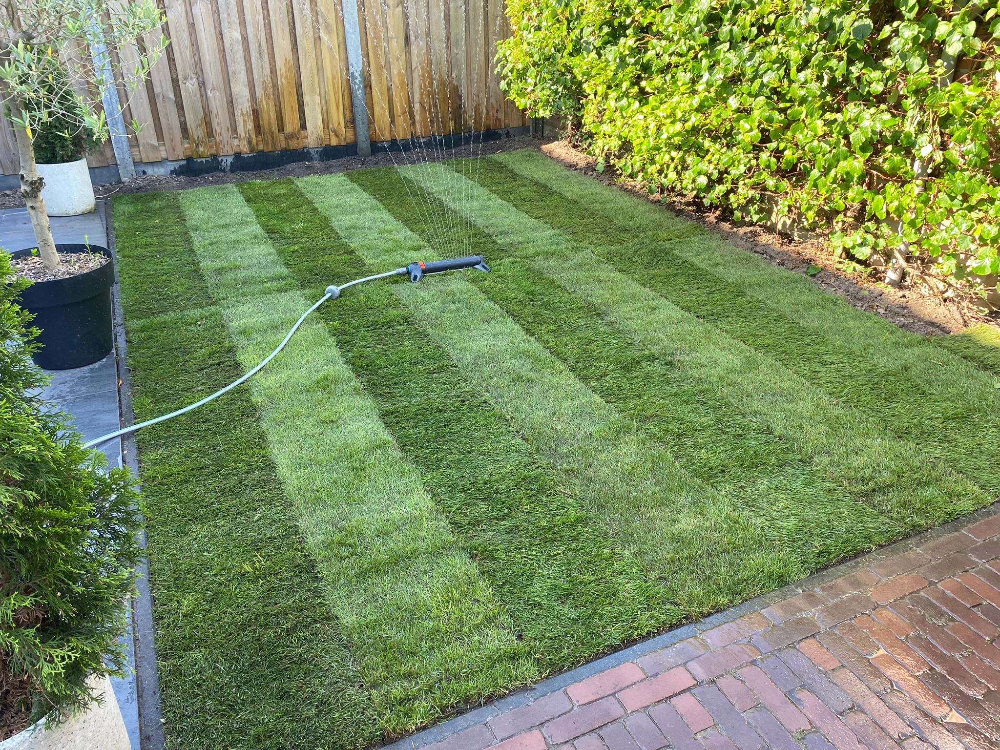
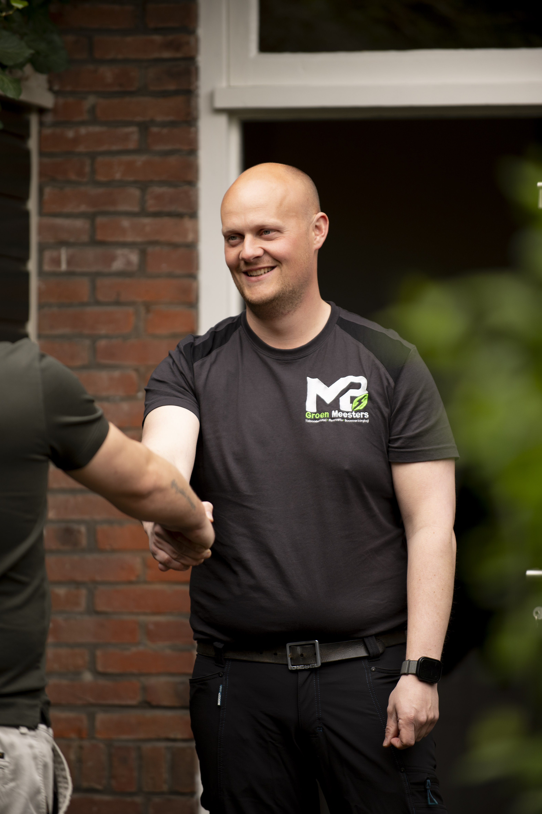
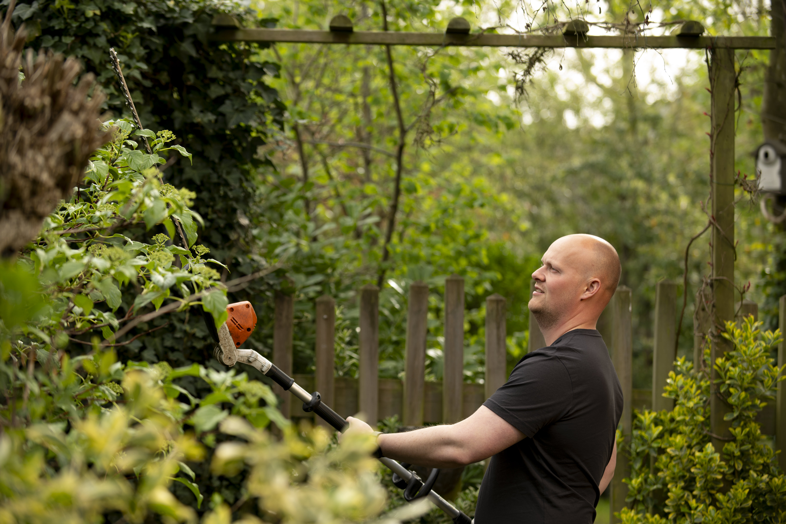
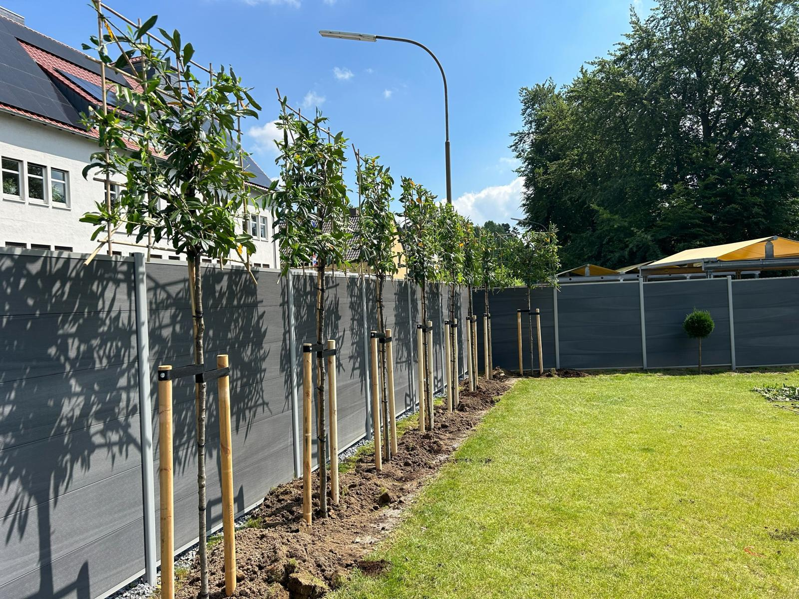

Ik wil een mooie tuin, maar weet niet waar ik moet beginnen
Je hebt ideeën, maar nog geen duidelijk plan of richting die echt past bij jouw woning en wensen.
Van eerste idee tot complete realisatie. MB Groen Meesters maakt buitenruimtes die rust geven, passen bij jouw woning en jarenlang mooi blijven.
Veel mensen willen wel een sterke buitenruimte, maar zoeken vooral duidelijkheid, vertrouwen en iemand die echt met ze meedenkt.
Je hebt ideeën, maar nog geen duidelijk plan of richting die echt past bij jouw woning en wensen.
Geen standaard oplossing, maar een buitenruimte die logisch voelt en mooi aansluit op de omgeving.
Je zoekt vakwerk, heldere communicatie en iemand die verder kijkt dan alleen de uitvoering.
We luisteren eerst naar jouw wensen, vertalen dat naar een sterk plan en zorgen daarna voor een nette uitvoering. Zo ontstaat een tuin die klopt in uitstraling, gebruik en afwerking.
Bespreek jouw ideeën

Van grondwerk tot afwerking: we zorgen voor een nette uitvoering en een resultaat waar je direct van kunt genieten.

We vernieuwen bestaande tuinen tot een frisse, moderne buitenruimte die weer volledig aansluit op jouw wensen.

Een mooie tuin blijft mooi met het juiste onderhoud. Periodiek of seizoensgericht, precies wat jouw buitenruimte nodig heeft.

Rust, groen en perfect onderhouden.

Natuurlijk, rustig en onderhoudsvriendelijk.

Boomverzorging voor bomen van alle leeftijden

Een toekomstgerichte tuin waarin groen, comfort en gebruik samenkomen.
MB Groen Meesters combineert vakwerk met een persoonlijke benadering. Geen standaard oplossing, maar een tuin die past bij jouw woning, wensen en manier van leven.

Maurice Beer wilde in 2018 voor zichzelf beginnen uit passie voor bomen en groen en wilde graag een eigen onderneming starten. Zijn liefde voor de natuur en het verzorgen van tuinen bracht hem ertoe om zijn kennis en creativiteit te combineren in een professionele dienstverlening.
Dit allemaal vanuit het idee om mensen te helpen hun buitenruimtes om te toveren tot groene, rustgevende en onderhoudsvriendelijke omgevingen, richtte hij MB-Groen Meesters op. Wat begon als een persoonlijke passie groeide al snel uit tot een betrouwbare partner voor zowel particuliere als zakelijke klanten, waarbij kwaliteit , vakmanschap en oog voor detail altijd centraal staan.
Maurice staat sindsdien bekend om zijn betrokkenheid, persoonlijke aanpak en het vermogen om van iedere tuin een unieke plek te maken die past bij de wensen en levensstijl van de klant.

We bespreken jouw wensen, bekijken de tuin en kijken samen wat er nodig is om er weer een nette en verzorgde buitenruimte van te maken.

Op basis van jouw wensen maak ik een duidelijk voorstel. Zo weet je vooraf waar je aan toe bent en wat je kunt verwachten.

Daarna ga ik aan het werk met het onderhoud of de renovatie van je tuin, met oog voor detail en een nette afwerking.

Ook na oplevering kun je rekenen op onderhoud en extra hulp, zodat jouw tuin er verzorgd en sterk bij blijft liggen.
“Ik heb met Maurice samengewerkt aan diverse projecten. Maurice is een zeer gedreven en creatieve hovenier die altijd oog heeft voor detail.
Zijn vermogen om onder hoge druk rustig te blijven, altijd actief en strak met tijdstip en afspraken te zijn, maakt hem een waardevolle collega.
Ik beveel Maurice van harte aan!”
“Enthousiaste tuinman die vlot en pragmatisch te werk gaat.”
Wouter Stevens NijmegenVertel kort wat je in gedachten hebt. Dan kijken we samen wat er mogelijk is voor jouw buitenruimte en wensen. Boek dan een vrijblijvend gesprek.
Plan een gesprek
Of het nu gaat om een nieuw complete aanleg, renovatie of onderhoud. Stuur een bericht en we nemen contact met je op.